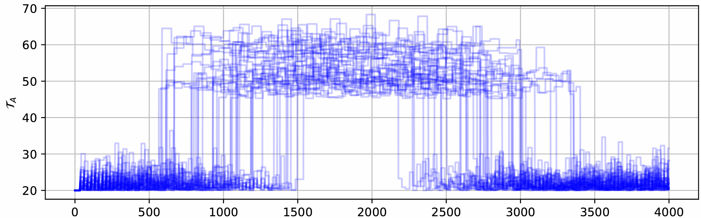
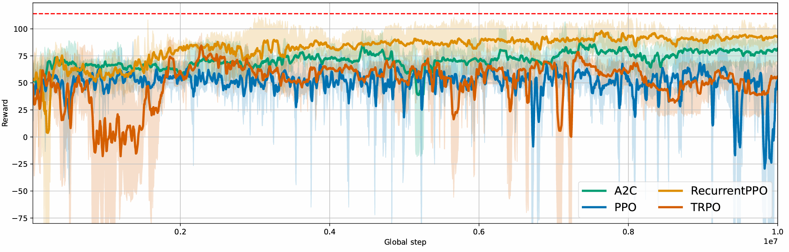
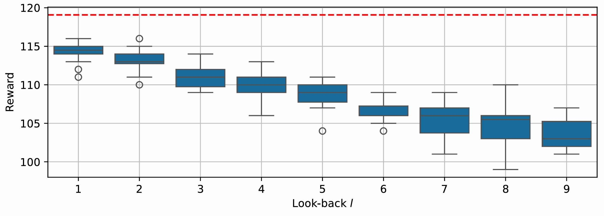

Waiting Time Jump
To further explore dynamic adjustments in waiting times, we introduce a variation called Waiting Time Jump. In this scenario, the processing time at the assembly changes unexpectedly at a randomly selected moment within the simulation. During a predefined time window, the processing time at the assembly increases, affecting the overall assembly process. A visualization of these processing time variations across multiple simulations is provided in the figure below. 
Since the exact timing and duration of these jumps Tjump vary, the maximum possible output fluctuates as well. To ensure fair comparisons between agents, we construct the new assembly time based on Tjump, so that the maximum possible reward remains constant. Specifically, we define a constant value R between 0.5 and 1.0 and set a factor f so that the expected maximum number of produced parts is R⋅N, where N is the expected number of parts produced in the standard waiting time scenario without jumps. For a detailed explanation and proof, see (Link to Lineflow paper).
What is optimized?
A well-designed control strategy must adapt to these changes in real time. When the processing time changes, the agent only becomes aware of it after the first part is completed under the new conditions. When the processing time at the assembly suddenly increases, the system may initially continue operating with an outdated waiting time, resulting in expired components. Similarly, when the processing time decreases, the waiting time may be too long, causing unnecessary delays. The challenge for an adaptive control agent is to detect these changes as early as possible and adjust the waiting time accordingly. If these changes to the assembly time are taken into account as quickly as possible, the waiting time can be optimized so that the reward is maximized.
Optimization using Lineflow
Our line can achieve a maximum reward of 115, with the RecurrentPPO algorithm performing best. This method achieves an average reward of up to 106. The A2C algorithm achieves an average reward of over 100, although the other methods do not reach these results. 
Verification of the optimization
To assess the effectiveness of different control strategies, we evaluate how well an agent can learn and adapt to these shifts based on observed processing times. By continuously updating its estimates of how long assembly takes, the agent can optimize waiting times to maintain a stable and efficient production flow.
To develop an optimal strategy for WTJ, we estimate the processing time based on past observations. Specifically, we track the processing times reported from the assembly station and compute a rolling average over recent observations. A longer tracking period provides a more stable estimate but slows the agent’s ability to detect sudden jumps.
By testing different tracking periods, we found that using only the most recent observation allows the agent to respond the fastest, leading to the highest reward, as shown in the figure below. This optimized performance is used as the maximum possible reward (115) for our line. 
Code
import numpy as np
from lineflow.simulation import (
Source,
Sink,
Line,
Assembly,
)
def make_agent_fixed_waiting_time(line, waiting_time):
waiting_times = line['S_component'].state['waiting_time'].categories
def agent(state, env):
"""
A policy that can effectively set float waiting times by
alternating between ints
"""
index = np.argmin(np.abs(waiting_times - waiting_time))
actions = {}
actions['S_component'] = {'waiting_time': index}
return actions
return agent
def compute_optimal_waiting_time(line):
time_assembly = line['Assembly'].processing_time*1.1 + 1 + 1 + 1.1
time_source = line['S_component'].processing_time*1.1 + 1.1
return time_assembly-time_source
def make_optimal_agent(line):
waiting_times = line['S_component'].state['waiting_time'].categories
processing_time_source = line['S_component'].processing_time
def agent(state, env):
"""
A policy that can effectively set float waiting times by
alternating between ints
"""
time_assembly = state['Assembly']['processing_time'].value + 1 + 1 + 1.1
time_source = processing_time_source*1.1 + 1.1
waiting_time = time_assembly - time_source
index = np.argmin(np.abs(waiting_times - waiting_time))
actions = {}
actions['S_component'] = {'waiting_time': index}
return actions
return agent
class WTAssembly(Assembly):
def __init__(
self,
name,
R=0.75,
t_jump_max=2000,
**kwargs,
):
self.R = R
self.t_jump_max = t_jump_max
self.trigger_time = None
self.factor = None
super().__init__(name=name, **kwargs)
def init(self, random):
"""
Function that is called after line is built, so all available information is present
"""
super().init(random)
self._sample_trigger_time()
def _compute_scaling_factor(self, T_jump, E=3.1):
T = self.processing_time
S = self.processing_std
T_sim = self.t_jump_max*2
return 1/T*((T_jump*(T+S+E)) / ((self.R-1)*T_sim+T_jump) - S -E)
def _sample_trigger_time(self):
self.t_jump = np.random.uniform(
0.8*self.t_jump_max,
self.t_jump_max,
)
self.factor = self._compute_scaling_factor(self.t_jump)
self.trigger_time = self.random.uniform(0.25, 0.75)*self.t_jump_max
def _sample_exp_time(self, time=None, scale=None, rework_probability=0):
"""
Samples a time from an exponential distribution
"""
coeff = self.get_performance_coefficient()
if self.trigger_time < self.env.now < self.trigger_time + self.t_jump:
factor = self.factor
else:
factor = 1
return time*factor*coeff + self.random.exponential(scale=scale)
class WaitingTime(Line):
def __init__(
self,
processing_time_source=5,
transition_time=5,
with_jump=False,
t_jump_max=None,
assembly_condition=35,
scrap_factor=1,
R=0.75,
**kwargs,
):
self.processing_time_source = processing_time_source
self.transition_time = transition_time
self.with_jump = with_jump
self.t_jump_max = t_jump_max
self.assembly_condition = assembly_condition
self.R = R
if self.with_jump:
assert self.t_jump_max is not None
super().__init__(scrap_factor=scrap_factor, **kwargs)
def build(self):
source_main = Source(
'S_main',
position=(300, 300),
processing_time=0,
carrier_capacity=2,
actionable_waiting_time=False,
unlimited_carriers=True,
)
source_component = Source(
'S_component',
position=(500, 450),
processing_time=self.processing_time_source,
waiting_time=0,
waiting_time_step=1,
carrier_capacity=1,
carrier_specs={
'carrier': {"Part": {"Assembly": {"assembly_condition": self.assembly_condition}}}
},
unlimited_carriers=True,
actionable_waiting_time=True,
)
if self.with_jump:
assembly = WTAssembly(
'Assembly',
t_jump_max=self.t_jump_max,
position=(500, 300),
R=self.R,
processing_time=20,
NOK_part_error_time=5,
)
else:
assembly = Assembly(
'Assembly',
position=(500, 300),
processing_time=20,
NOK_part_error_time=5,
)
sink = Sink('Sink', processing_time=0, position=(700, 300))
assembly.connect_to_component_input(
station=source_component,
capacity=3,
transition_time=self.transition_time,
)
assembly.connect_to_input(source_main, capacity=2, transition_time=2)
sink.connect_to_input(assembly, capacity=2, transition_time=2)
if __name__ == '__main__':
line = WaitingTime()
agent = make_optimal_agent(line)
line.run(simulation_end=4000, agent=agent)
print(line.get_n_parts_produced())